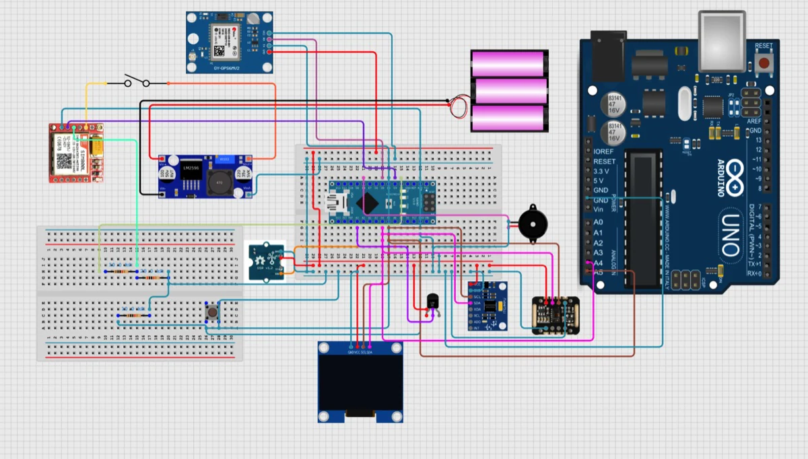

Wearable Health Monitoring & Fall Detection System
A wearable that fuses vital-sign monitoring (temp, HR, SpO2, stress) with MPU6050 fall detection, GPS, and SMS/Wi-Fi alerts — 90% fall-detection accuracy.

Fall or vital-sign alert
Scroll to watch it unfold. Each beat is one documented step of the project.
- 01
Monitoring
The wearable tracks movement with an MPU6050 motion sensor.
- 02
Fall pattern
A sudden movement and impact match a fall.
- 03
Locate
GPS adds the wearer's position.
- 04
Alert
An emergency alert goes out by SMS and Wi-Fi.
- 05
Outcome
An alert with location goes out without the wearer pressing anything.
- 06
Vital signs
Abnormal readings raise an alert in real time.
An illustration of how the system works, drawn from the write-up below. It is not recorded output.
Overview
About one in four adults over 65 falls each year, and most falls go unreported to a healthcare provider. Existing monitors are either fixed in place or need the user to press a button, which fails exactly when someone is incapacitated — and prolonged immobility after a fall ('long lies') is independently linked to hypothermia and higher mortality. This CSE360 team project (Reshad Ul Karim, Syeda Maliha Tabassum, Sammam Mahdi, Abrar Samin) builds a single wearable that continuously tracks vital signs and detects falls, then alerts both locally and remotely with no manual step required.
Approach
A dual-Arduino master–slave split (Nano as master, Uno as slave) was the fix for a real constraint discovered during the build — a single Nano ran out of memory once sensors, GPS, GSM and a display were all wired in, so the Uno was carved off to own the OLED over I²C while the Nano handles sensing and communication. Four sensors feed it: LM35 (temperature), MAX30102 (heart rate/SpO2), a GSR sensor (skin-conductance stress), and an MPU6050 accelerometer/gyroscope for motion. Fall detection runs as a small state machine — IDLE → DESCENT → IMPACT → POST_IMPACT — that only confirms a fall after a sharp downward velocity, a high-g impact spike, and a period of post-impact stillness, which is what keeps a fast sit-down or a jump from tripping a false alarm. Confirmed falls and vital-sign anomalies trigger a buzzer/LED locally and an SMS with live GPS coordinates via a SIM800L module remotely, alongside a Wi-Fi JSON feed to a local server.
Results & engineering
In simulated trials the system caught 45 of 50 falls (90% accuracy), with sensor error within clinically acceptable margins — temperature ±0.5°C, SpO2 ±2%, heart rate ±3 bpm. SMS alerts landed within 5–7 seconds of trigger, and GPS acquired a satellite lock in 35–60 seconds outdoors, accurate to 3–5 m (indoor lock was unreliable, a known limit of low-cost GPS receivers). Getting there meant solving real integration problems along the way: GSM and GPS sharing one supply caused voltage instability until a buck converter regulated it, the Nano's single hardware UART couldn't serve GPS and GSM at once until SoftwareSerial/AltSoftSerial split the load, and I²C address clashes were resolved by giving the OLED its own dedicated slave MCU. Built for about 5,800 BDT in components.
By the numbers
Highlights
- Elderly Care
- Real-time Alerts
- Multi-sensor Fusion
Tech stack & key skills
Core tools, methods and skills demonstrated in this project: